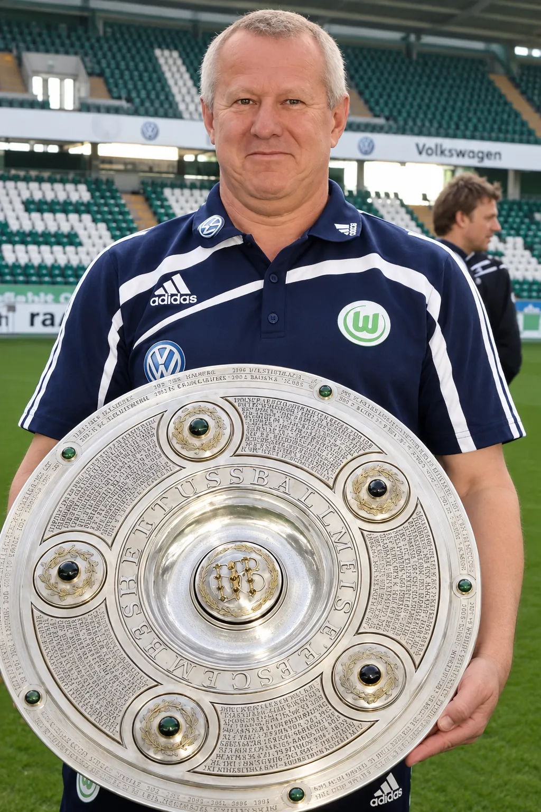

- Facharzt für AllgemeinmedizinSportmedizin, Leistungsdiagnostik, Reisemedizin
- 20 Jahre MannschaftsarztVfL Wolfsburg, 1998 bis 2018, seitdem beratend
- Erdgeschoss, barrierefreiHamburger Straße 277, Parkhaus am Haus
Die Praxis
Zwanzig Jahre Mannschaftsarzt im Profifußball. Heute für Sie: Sportverletzungen, Leistungsdiagnostik, Arthrosetherapie, Reisemedizin.
Zwanzig Jahre habe ich Profis nach Verletzungen zurück auf den Platz gebracht. Heute nehme ich mir diese Zeit für Sie, ob Sie Marathon laufen, Tennis spielen oder einfach schmerzfrei gehen wollen.
Womit kommen Sie?
Vier Wege in die Praxis.
Frisch verletzt
Umgeknickt, Muskel gezerrt, Knie verdreht. Kurzfristiger Termin, Untersuchung und Ultraschall am selben Tag.
SportmedizinSchmerzen, die bleiben
Arthrose, gereizte Sehnen, Fersensporn. Stoßwelle, Hyaluronsäure oder Eigenblut, sachlich beraten.
ArthrosetherapieLeistung messen
Laktat-Stufentest, Belastungs-EKG, Herzultraschall. Aus den Werten ein Trainingsplan.
LeistungsdiagnostikVor oder nach der OP
Zweite Meinung vor dem Eingriff, Nachsorge und Kontrollen bis zur Sportfreigabe. Auch bei Operationen in anderen Häusern.
Sport-Reha
Leistungen
Was ich anbiete.
- 01
Sportmedizin
Untersuchen, behandeln, vorbeugen. Ultraschall in der Praxis.
- 02
Leistungsdiagnostik
Laktat-Stufentest, Belastungs-EKG, Herzultraschall.
- 03
Sport-Reha
Vor und nach der Operation, bis zur Sportfreigabe.
- 04
Arthrosetherapie
Stoßwelle, Hyaluronsäure, Eigenblut.
- 05
Allgemein- und Reisemedizin
Check-up, Impfberatung, Tauglichkeit.
Woher ich komme
Zwanzig Jahre Profifußball.
Von 1998 bis 2018 Mannschaftsarzt des VfL Wolfsburg, seitdem beratend. Mannschaftsarzt (M-Arzt) im Verfahren der VBG, der gesetzlichen Unfallversicherung des Profisports.
- 1998Beginn als Mannschaftsarzt des VfL Wolfsburg
- 2009Deutsche Meisterschaft
- 2015DFB-Pokalsieg
- 2018Seitdem beratend; eigene Privatpraxis in Braunschweig
Intern
Jahreszahlen und Vereinsnennung mit Dr. Pfeiler bestätigen. Bildrechte (Fotograf, Verein) und Einwilligung der abgebildeten Spieler klären.

Zur Person
Dr. med. Günter Pfeiler
- Facharzt
- Allgemeinmedizin
- 1998 – 2018
- Mannschaftsarzt VfL Wolfsburg, seitdem beratend
- Verfahren
- Mannschaftsarzt (M-Arzt) der VBG
- Praxis
- Hamburger Straße 277, Braunschweig
Intern
Porträt ist vorläufig das Archivfoto. Für den Livegang ein aktuelles Foto im Sprechzimmer machen lassen; alle 40 recherchierten Vorbilder nutzen eigene Fotografie.
Ihr erster Termin
So läuft es ab.
Anrufen
Sie rufen an und schildern kurz, worum es geht. Bei einer frischen Verletzung sagen Sie das gleich; dann gibt es kurzfristig einen Termin.
Untersuchung
Gespräch, körperliche Untersuchung und, wenn nötig, Ultraschall in der Praxis. Bringen Sie alte Befunde und Bilder mit.
Plan
Sie gehen mit einem klaren Befund und einem Plan nach Hause: Behandlung, Belastung, nächster Kontrolltermin.
Kosten
Privatpraxis, offen gerechnet.
Abgerechnet wird nach der Gebührenordnung für Ärzte (GOÄ).
- Privatversicherte und Beihilfeberechtigte reichen die Rechnung bei ihrer Versicherung oder Beihilfestelle ein.
- Gesetzlich Versicherte sind als Selbstzahler willkommen. Fragen Sie vorher bei Ihrer Kasse nach, was sie übernimmt.
- Stoßwelle, Hyaluronsäure und Eigenblut sind Selbstzahlerleistungen. Die Kosten werden vorher schriftlich vereinbart.
Intern
Abrechnungsangaben (GOÄ-Faktor, Erstattung, Beihilfe, Preisrahmen Erstgespräch) vor dem Livegang mit dem Arzt klären. Keine Praxis in Braunschweig nennt Kosten; ein Preisrahmen wäre ein Alleinstellungsmerkmal.
Kontakt
Rufen Sie an.
0160 5728656Im Notfall: Rettungsdienst 112. Außerhalb der Sprechzeiten: ärztlicher Bereitschaftsdienst 116 117.
- Praxis
- Hamburger Straße 277
38114 Braunschweig - Termine
- Nach Vereinbarung
- Anfahrt
- Parkhaus direkt am Haus. Stadtbahn 1 und 2, Haltestelle Ludwigstraße.
- Zugang
- Erdgeschoss, barrierefrei